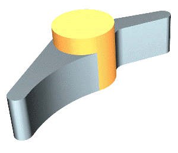

In synchronous modeling, there is now improved recognition of problem area conditions that are likely to result in potential errors when moving or deleting faces.
The Alerts messages now provide improved clues to identify the error condition and offer potential solutions.
In the example, the faces on the center boss feature are to be deleted using the Delete Face command. An Alerts message informs you that the remaining faces cannot adapt to close the area left by deleting the selected faces. Some possible solutions are given, such as using the cap option or deleting the blends first.
